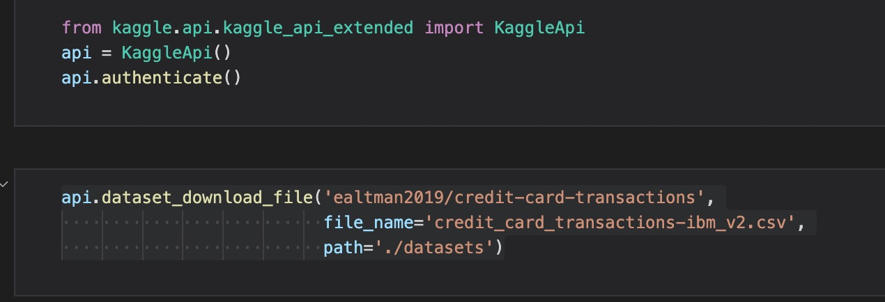
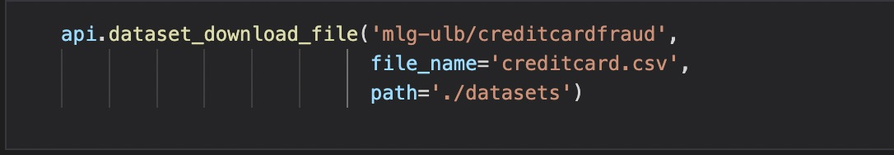
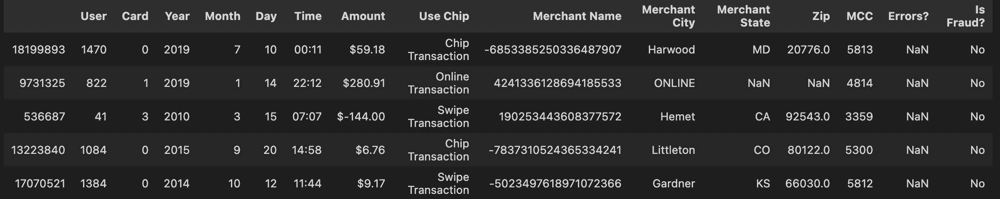
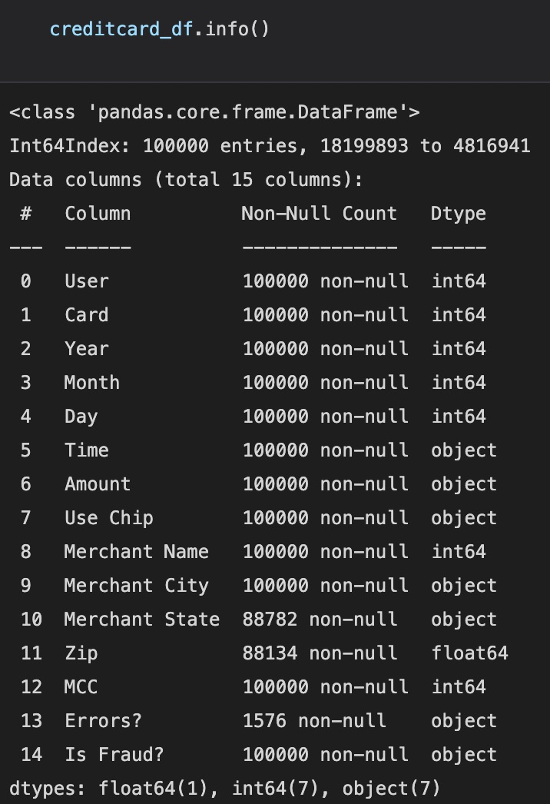
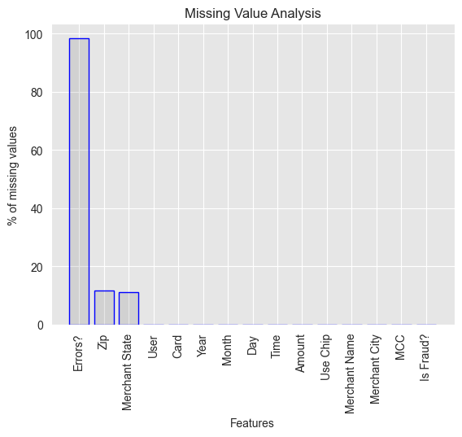
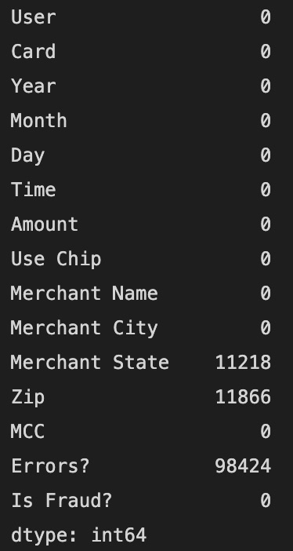
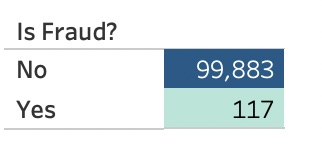
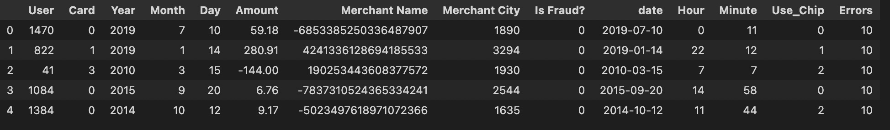

Data Collection and Preparation

As we all know Data collection and preparation are critical steps in the data analysis process as they determine the quality and accuracy of the results obtained. It involves gathering data from various sources such as surveys, experiments, databases, or publicly available datasets and then cleaning, transforming, and integrating the data to make it ready for analysis.
In my project, the data is collected from Kaggle using Kaggle api.https://www.kaggle.com/datasets/ealtman2019/credit-card-transactions?select=credit_card_transactions-ibm_v2.csv

https://www.kaggle.com/datasets/mlg-ulb/creditcardfraud?datasetId=310&sortBy=voteCount
The collected data must be checked for missing or incorrect values, outliers, and inconsistencies, and appropriate steps should be taken to address these issues. The goal is to create a clean and well-structured dataset that accurately represents the underlying phenomenon being studied, making it easier to perform subsequent analysis.
A glimpse of the raw data can be seen here
Data types of the columns in our dataset
Looking at the null values of each variable , Errors?, Zip, Merchant State has the most percentage of missing values.
To have a better look at how much values are missing from the above columns.
To get an insight about the target variable i.e. is Fraud? which tells us if the transaction made was a legitimate transaction or a fraudulent one.
This is the clean data after doing all the neccessary steps such as detecting any missing values, outliers, transformation etc.
Detail code and methods can be seen hereClick Here !